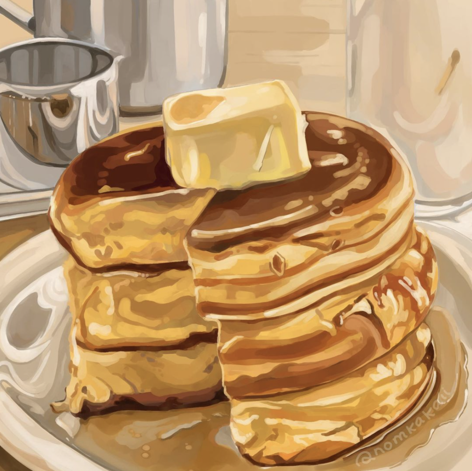
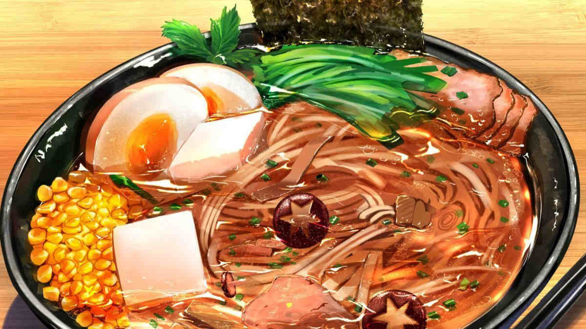
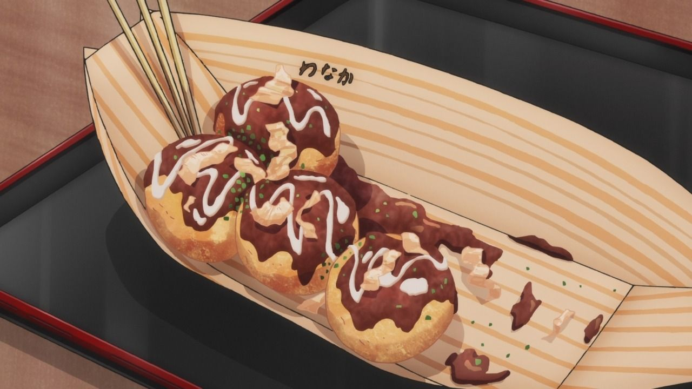

Pancake
Ingredients
- 1 cup all-purpose flour
- 2 tablespoons sugar
- 1 cup milk
- 1 egg
- 2 tablespoons melted butter
- 1 teaspoon baking powder
- 1/2 teaspoon salt
Recipe
- In a bowl, mix flour, sugar, baking powder, and salt.
- In another bowl, whisk milk, egg, and melted butter together.
- Combine wet and dry ingredients until smooth.
- Heat a lightly oiled pan over medium heat and pour batter to form pancakes.
- Cook until bubbles form, flip and cook until golden brown.

Hotpot
Ingredients
- 1 liter chicken or vegetable broth
- 200g thinly sliced meat (beef or chicken)
- 100g tofu cubes
- 1 cup chopped vegetables (bok choy, mushrooms, spinach)
- 1 packet noodles or vermicelli
- 2 cloves garlic (minced)
- 2 tablespoons soy sauce
Recipe
- In a pot, bring the broth to a boil and add garlic and soy sauce.
- Add vegetables and let them cook for a few minutes.
- Stir in tofu and noodles; cook until noodles are tender.
- Add thinly sliced meat and cook until done.
- Serve hot directly from the pot with dipping sauces of your choice.

Ramen
Ingredients
- 4 cups chicken or vegetable broth
- 2 packs ramen noodles
- 2 boiled eggs
- 1 cup sliced mushrooms
- 1/2 cup chopped green onions
- 1 tablespoon soy sauce
- 1 teaspoon sesame oil
Recipe
- Heat broth in a pot and add soy sauce and sesame oil.
- Add mushrooms and cook until tender.
- Add ramen noodles and cook according to package instructions.
- Serve in bowls topped with boiled eggs and green onions.
- Enjoy hot!
Pastry
Ingredients
- 1 cup all-purpose flour
- 1/2 cup unsalted butter (cold and cubed)
- 1/4 cup cold water
- 1 tablespoon sugar (for sweet pastry)
- 1/4 teaspoon salt
- Filling of your choice (jam, chocolate, cream)
- 1 egg (for egg wash)
Recipe
- In a bowl, mix flour, sugar, and salt.
- Cut in the butter until the mixture is crumbly.
- Add cold water and mix until dough forms.
- Roll out the dough, cut into shapes, and add filling.
- Seal edges, brush with egg wash, and bake at 180°C (350°F) for 20–25 minutes.
Takoyaki
Ingredients
- 1 cup all-purpose flour
- 2 eggs
- 2 cups dashi or water
- 1/2 cup chopped boiled octopus
- 1/4 cup chopped green onions
- 1/4 cup pickled ginger (beni shoga)
- Takoyaki sauce
- Japanese mayo
- Bonito flakes (katsuobushi)
- Seaweed powder (aonori)
Recipe
- In a bowl, mix flour, eggs, and dashi to make batter.
- Heat a takoyaki pan and grease it well.
- Pour batter into the molds and add octopus, ginger, and green onions.
- Turn the balls with skewers until golden and crisp all around.
- Top with takoyaki sauce, mayo, bonito flakes, and seaweed powder.
